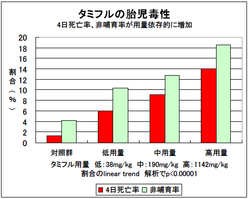

社団法人日本産婦人科医会が5月19日、産婦人科開業医らに対して、妊婦や授乳中の女性が感染した場合、治療薬（タミフル、リレンザ）の使用を勧める内容の通知を出されたということを、インターネットのニュースで知りました。
タミフルの新薬承認情報集を再度点検し、ヒトの常用量でも新生児死亡などの重大な毒性があることを再確認しました。そこで、タミフルを妊婦に使用しないようにとの主旨の意見書を、緊急に同会に対して、メールおよびFAXで提出いたしました。
それらの文書をお示し、妊婦には特に危険であるので使用しないようにお願いいたします。乳幼児や10代はもちろん、他の年齢についても不要・危険であることは、これまで同様です。
NPO法人医薬ビジランスセンター（薬のチェック）は、国際医薬品情報誌協会（ISDB）の一員として、一般向け医薬品情報誌『薬のチェックは命のチェック』を年４回編集・発行している非営利、かつ、製薬企業の援助をまったく受けずに活動しているNPO法人です。
NPO法人医薬ビジランスセンター（薬のチェック）は、国際医薬品情報誌協会（ISDB）の一員として、一般向け医薬品情報誌『薬のチェックは命のチェック』を年４回編集・発行している非営利、かつ、製薬企業の援助をまったく受けずに活動しているNPO法人です。
代表者（浜）は、もともと内科勤務医（地域の300床規模の病院に20年間勤務）ですが、医薬品の情報が不適切と考え、1986年より医師・薬剤師向けの医薬品情報誌TIP誌（正しい治療と薬の情報）の執筆・編集・発行を手がけ（編集長、別府宏圀医師）、1997年には病院を辞し、医薬ビジランスセンターを作り（2000年からNPO法人化）、2001年より一般向け医薬品情報誌『薬のチェックは命のチェック』を年４回編集・発行してきております。
NPO法人医薬ビジランスセンター（薬のチェック）については、ホームページをご参照下さい。『薬のチェックは命のチェック』については、こちらを参照下さい。
さて、つい先ほど、貴会が5月19日、産婦人科開業医らに対して、妊婦や授乳中の女性が感染した場合、治療薬（タミフル、リレンザ）の使用を勧める内容の通知を出されたということを、インターネットのニュースで知りました。
妊婦が新型インフル感染ならタミフル使用を婦人科医会：2009年5月19日(火)19時32分配信 読売新聞
新型インフルエンザの感染拡大を受け、日本産婦人科医会は１９日、各地の産婦人科開業医らに対し、妊婦や授乳中の女性が感染した場合、治療薬（タミフル、リレンザ）の使用を勧める内容の通知を出した。妊婦は感染すると重症化しやすく、米国では死亡例も出ている。このため米疾病対策センター（ＣＤＣ）は治療薬の使用を勧奨している。同会もそれにならい、治療上の有益性が危険性を上回ると判断される場合に限り、投与を勧めるとした。
当センターでは、 2003年以来、長年にわたり、タミフルの利益と害のバランスの問題について調査研究を続けきております。
当センターの調査の結果では、タミフルの効果は極めて乏しく、単に精神神経症状の発現が問題であるだけでなく、妊娠中の胎児、新生児に対しては、ノイラミニダーゼ阻害剤としての害の可能性が具体的に心配になります。
これまで、妊婦にはほとんど使われることはないと考え、当センターは特別の警告は発してきませんでしたが、今回貴会よりタミフルの使用を推奨する通知を出された、との報に接しました。
妊婦に対するタミフルの害は見過ごすことができない重大なものであると考えます。したがって、今回の通知の影響を考え、その科学的理由を申し上げ、是非とも、19日に出された通知を再検討され、妊婦に対してタミフルを使用することを中止していただくようにお願い申し上げます。
理由は以下の通りです。
添付した胎児毒性のラットなどの実験にあるように(p208)、
4日生存率（出生児のうち４日間生存できた割合％）が 対照群の 98.7％に対して、
タミフル低用量群（オセルタミビルのリン酸塩として50 mg/kg、
リン酸部分を除くフリー体オセルタミビルとして38mg/kg)で 94.0％、
タミフル中用量群（250mg/kg、フリー体として190mg/kg）では 90.9％、
タミフル高用量群（1500mg/kg、フリー体として1143mg/kg、）では 86.0％
と、用量依存的に低下しています。
図には、100％から4日生存率を減じた数を4日死亡率（４日非生存率）として示しました（割合のlinear trend 解析で、p<0.00001でした）。
タミフルの低用量群は、フリー体オセルタミビルとして38mg/kgです。これを体表面積換算すると、人では約6mg/kgに相当します。
妊娠前の体重が50kgの女性にとって、1日150mgは体重あたり3mg/kgですから、6mg/kgは高々その2倍に過ぎません。
この用量を用いたところ、出生児の4日間死亡率（非生存率）が約300匹中5.9％でした。対照群の約300匹中1.3％に比較すると4倍以上の死亡率であったのです。割合の差は有意でした（p=0.003）。
最低用量でも胎児、新生に対して安全用量ではなかったのです。したがって安全量は決定されていませんし、常用量である1日２カプセル（150mg）を妊婦に用いることは、胎児・新生児に対して、ほぼ間違いなく毒性用量と言えます。
オセルタミビル高用量群では、25匹の妊娠ラット中9匹（36％）が死亡しております(p208死亡欄)。
これは、一般成熟ラット4週間毒性試験における1500mg/kg群の死亡率（雌12匹中誤投与で１匹死亡、雄12匹中０匹死亡）より有意に高い割合です。また、2000mg/kgを2週間経口投与した試験における死亡率（雌10匹中１匹死亡、雄10匹中誤投与で１匹死亡）よりも有意に高い割合です。
つまり、タミフルは、非妊娠動物に対する毒性よりも、妊娠動物に対する毒性の方が強いことを示しています。
妊娠中は胎児といういわば「異物」を体内に有している状態であり、通常よりも種々のサイトカインが高レベルとなりえます。
特に分娩時には、頚管が熟化し、プロスタグランディンレベルが（全身性に）高まり、いわば強い炎症反応を有する状態となります。この状態は、タミフル未変化体が毒性を示しやすくなる条件と一致しています。
妊婦がインフルエンザのハイリスク者であるとしても、インフルエンザの重症化は、サイトカインストームによるものであり、タミフルやリレンザなどノイラミニダーゼ阻害剤は、単に増殖したインフルエンザウイルスが細胞から離れるのを阻害するだけですから、サイトカインストームを軽減するものではありません。
このことは、横浜市立大学小児科の横田俊平教授も述べておられるとおりです（添付の文献抜粋をご参照ください）。
発熱をみてからオセルタミビルを服用した頃には、軽症例ではウイルス量は減少し始め、サイトカインストームが生じるような例では、（これも横田教授が述べておられるように）すでに病態形成が進行しています。
したがって、いずれにしても、病勢の減退や進行に、タミフルは影響を与えません。
むしろ、 ヒトのあらゆる細胞にあり、生体膜成分の若返りに関係しているノイラミニダーゼを阻害することにより、生体膜の老化を招き、急速に発達すべき神経システムをはじめ生体のあらゆる組織の発育、ひいては新生児の正常な発育が阻害される可能性があり得ます。
タミフルを服用しても、非ステロイド抗炎症剤を服用することにより、タミフルによる症状軽減効果はなくなり、タミフルを使用しない場合よりむしろ治癒が遅延する傾向さえあります。
解熱剤を用いず、安静を保つのが重要でしょう。
貴会におかれましたは、くれぐれもこうしたタミフルの害を軽視することなく、ご賢察いただきますよう、お願い申し上げます。